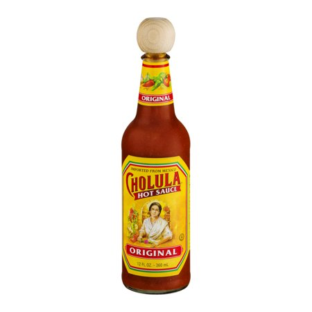
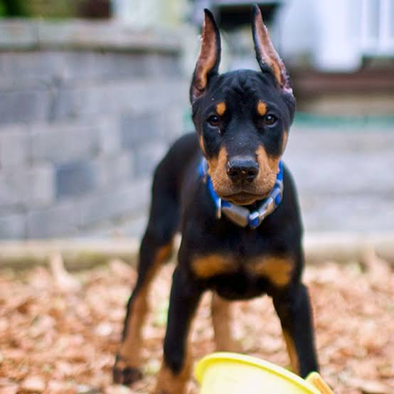
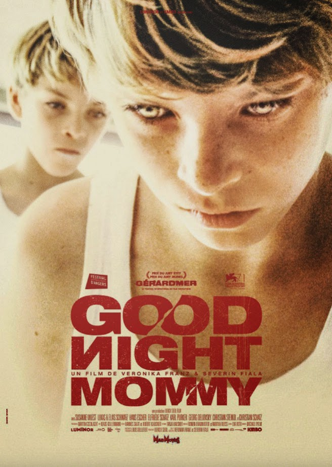
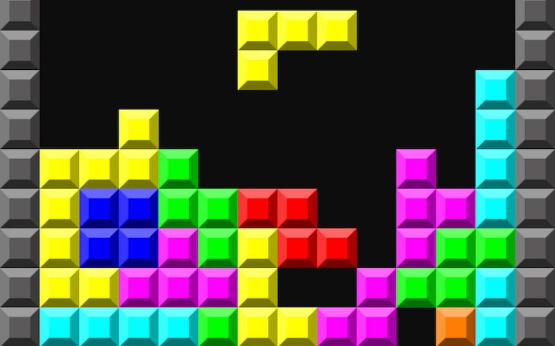

I love spicy food, and Cholula hot sauce is an accesible, tasty condiment that I always put on my food.

My favorite dog breed is the Doberman, and I love surrounding myself around dogs, they make me happy.

I am a huge fan of foreign, independent films, but I also love horror movies, and Goodnight Mommy is a perfect combination of the 3 elements I love most in a movie. Recently, I have become quite fond of aesthetics and design, I aspire to live a minimalist lifestyle.

During my free time I enjoy playing productive games that challenge me, which is why Tetris is one of my favorite games.